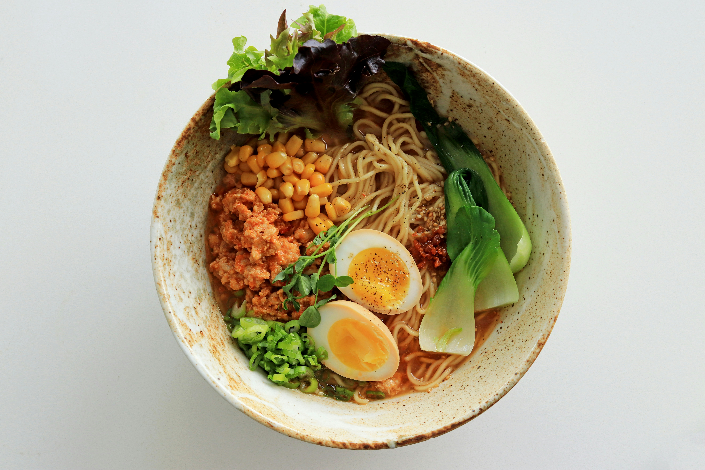

El Concurso de Cocina Definitivo reúne a los mejores chefs de todo el país para mostrar sus habilidades culinarias. Cada concursante debe crear una comida gourmet usando una cesta misteriosa de ingredientes. La competencia es feroz, con los participantes siendo juzgados en creatividad, sabor y presentación. El ganador del año pasado, la Chef María González, sorprendió a los jueces con su uso innovador de productos locales y sabores audaces. Este año, las apuestas son aún más altas, con un gran premio que incluye una beca para una prestigiosa escuela de cocina y la oportunidad de publicar un libro de recetas.
Los concursantes vienen de diversos antecedentes, cada uno trayendo su estilo único y filosofía culinaria a la mesa. Desde la cocina francesa tradicional hasta platos de fusión modernos, la competencia es un crisol de sabores y técnicas. El evento no solo destaca los talentos de los chefs individuales, sino que también promueve la educación culinaria y la importancia de la sostenibilidad en la cocina. Los espectadores pueden esperar ser deleitados por la creatividad y la pasión mostrada por los chefs mientras luchan en la cocina. Este año, el evento también contará con demostraciones de cocina interactivas y talleres dirigidos por chefs reconocidos.
Reglas del Concurso
- Todas las comidas deben ser preparadas usando los ingredientes proporcionados en la cesta misteriosa.
- Los concursantes tienen 90 minutos para completar sus platos.
- Los criterios de juzgamiento incluyen sabor, presentación y creatividad.
Además de la competencia principal, habrá una serie de desafíos adicionales diseñados para probar habilidades específicas, como técnicas de cuchillo, artes de pastelería y gastronomía molecular. Estos desafíos ofrecen a los concursantes la oportunidad de ganar puntos adicionales y mostrar su experiencia en diferentes áreas de la cocina. Los jueces, compuestos por chefs de renombre y críticos gastronómicos, proporcionarán retroalimentación constructiva para ayudar a los concursantes a mejorar sus habilidades y perfeccionar sus técnicas. La audiencia también tendrá la oportunidad de probar algunos de los platos y votar por su chef favorito, añadiendo un elemento emocionante de participación del público al evento.
El Concurso de Cocina Definitivo es más que una competencia; es una celebración de las artes culinarias y una plataforma para que los chefs compartan su pasión con el mundo. Ya seas un profesional experimentado o un cocinero aficionado, este evento ofrece algo para todos. Únete a nosotros mientras presenciamos la creación de obras maestras culinarias y descubrimos al próximo gran chef. ¡No te pierdas este emocionante evento que promete ser un festín para los sentidos!